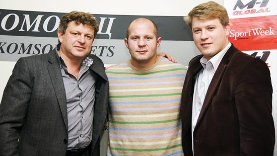
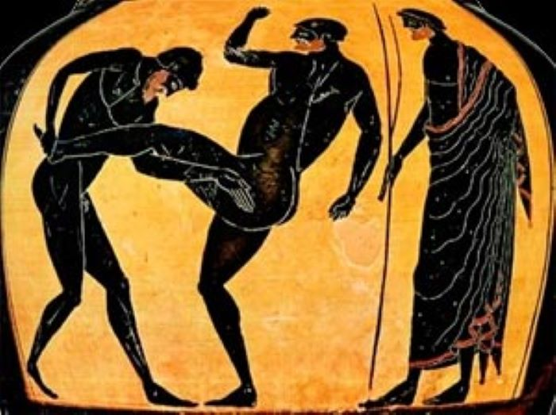
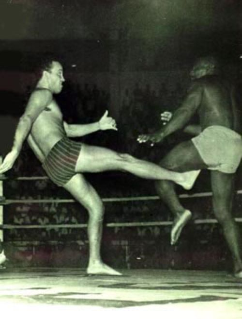
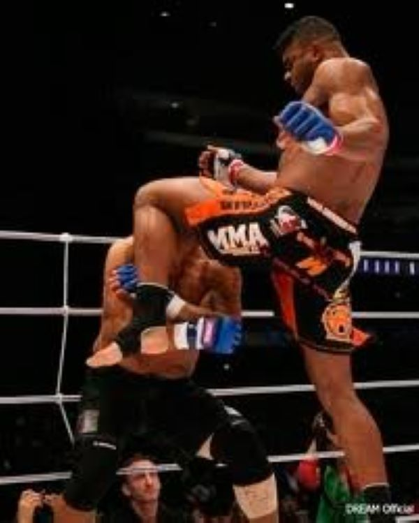
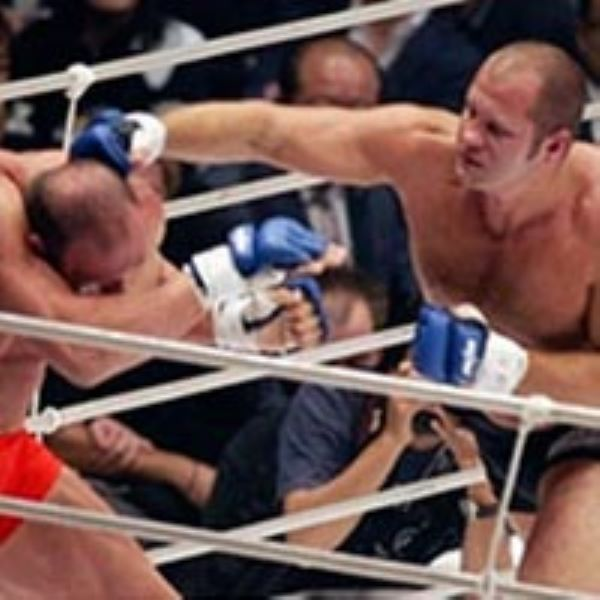

Федерация ММА Таджикистана: Обзор Многонациональный спорт, смешанные единоборства (ММА), приобретает все большую популярность во всем мире, в том числе и в Таджикистане. Федерация ММА Таджикистана является главным регулятором и организатором соревнований по смешанным единоборствам в стране, а также представляет таджикских спортсменов на международных соревнованиях. Основная цель Федерации ММА Таджикистана состоит в развитии и продвижении смешанных единоборств как спорта в стране и повышении уровня профессионализма таджикских спортсменов в этой области. Работая на благо своих членов и спортсменов, Федерация стремится создать благоприятные условия и возможности для тренировок, соревнований и развития карьеры бойцов ММА в Таджикистане. Для достижения своих целей Федерация ММА Таджикистана работает в тесной связи с правительством страны, другими спортивными организациями и международными партнерами, такими как Международная федерация смешанных единоборств (IMMAF). Федерация регулярно организует национальные и региональные чемпионаты, тренировочные лагеря и семинары для повышения квалификации тренеров и судей.
Рождение ребенка может быть нервным испытанием для новых родителей, а не для девяти. месяцев беременности, я имею в виду после того, как ребенка приносят домой из родильного дома. больница. Всегда одно и то же, когда у них рождается третий ребенок. они все поняли, но с номером один нужно учиться.
Радионяни помогают вам слышать потребности вашего ребенка без необходимости находиться в комната с ребенком. Некоторые радионяни являются портативными или «мобильными» и имеют небольшой размер. достаточно, чтобы вы могли носить его в кармане, занимаясь своими повседневными делами дом. В зависимости от вашего ценового диапазона лучше всего иметь базовый блок, втыкается в стену. Приемное устройство может быть похоже на ваш портативный телефон, вы можете носите его с собой и снова подключите к базовому блоку для подзарядки.

Смешанные единоборства (ММА) - вид спорта и категория боевых искусств, включающий в себя разнообразные средства и способы ведения обороны и нападения в рукопашном бою. Основу ММА составляют классические виды борьбы (греко-римская и вольная борьба, дзюдо, дзюдзюцу и др.) и классическая ударная техника (бокс и кикбоксинг). ММА основана на принципе избежания «кровавой бойни» и имеет правила, которые четко регламентируют поведение спортсменов и запрещают проявление любой жестокости.
Принципы ММА берут свое начало еще со времен до нашей эры. Единоборства с минимумом ограничений и запретов были известны еще в Древнем Египте и Древней Греции. В 648 до н.э. в программу Олимпийских игр впервые включили смешанные единоборства. Правилами разрешались практически все удары различными частями тела, броски, захваты, удушения и т.п.. Интересно, что можно было также кусаться, выдавливать сопернику глаза, отрывать ему уши и волосы. Чемпионом по смешанным единоборствам свое время стал знаменитый ученый и философ Пифагор. Смешанные бои демонстрировались и в римском Колизее, а статуи выдающихся бойцов, боевых сцен украшали дворцы и площади чуть ли не каждого итальянского города. В темном Средневековье не было места ни Олимпийским играм, ни смешанным единоборствам (хотя драки, безусловно, были). Проводить поединки между представителями разных единоборств по правилам смешанного боя в Европе и во многих странах Дальнего Востока начали только в конце XIX - начале ХХ века. Тогда немалую популярность получили так называемые кросс-матчи: чемпион мира по боксу противостоял чемпиону мира по борьбе и др.. Но эти соревнования не носили систематического характера. В Англии тогда и возникло боевое искусство под названием «бартитсу», которое объединяло европейские и азиатские единоборства. Эту борьбу вспоминает известный английский писатель Артур Конан Дойл, приписав владение ею своему антигерою - профессору Мориарти. Именно навыки бартитсу Мориарти использует в рукопашном поединке против Шерлока Холмса, представителя школы английского бокса, на краю Рейхенбахского водопада. В конце 60-х годов прошлого века известный мастер единоборств и выдающийся актер Брюс Ли положил принципы ММА в основу своей борьбы «Джиткундо». Учение Брюса Ли и фильмы с его участием так повлияли на развитие ММА, что в 2004 году президент одной из крупнейших ММА-организаций - «UFC» Дейна Уайт назвал Ли «отцом ММА».


Организационно и «технически» смешанные единоборства окончательно сформировались в 1990-х - США, Японии и Бразилии. Лидером, конечно, были США. Здесь еще в начале ХХ века активно проводились турниры по вольной (или вольно-американской) борьбе. Впоследствии возник реслинг - своеобразный вариант смешанных боев, только со значительным элементом шоу и актерской игры. В Бразилии первые турниры по смешанным единоборствам назывались «вале тюдо» (в буквальном переводе с португальского - «разрешено все»). История абсолютных поединков в Бразилии началась в 1920-х, когда знаменитый ныне клан Грейси стал устраивать бои с минимумом ограничений - до полной победы одного из бойцов. Представители клана тренировались под руководством японского мастера джиу-джитсу Мицуо Маеда, который переехал в Бразилию, (отсюда и принятое во многих странах название своеобразной техники - «бразильское джиу-джитсу"). К середине 1980-х турниры по «вале тюдо» проводились только в Бразилии, затем часть клана во главе с Хелио Грейси перебирается в США, где в то время большую популярность как раз получили разнообразные «бои без ограничений». Первый турнир по смешанным единоборствам назывался UFC (Ultimate Fighting Championship) и прошел в США в 1993 году. Именно этот год считается датой официального рождения нового старого вида спорта. В турнире принимали участие восемь участников, которые соревновались за призовой фонд в размере 50 тысяч долларов. В ринг выходили боксеры, каратисты, представители борьбы, сумо и т.п.. К огромному удивлению 2800 зрителей в зале и еще 86 тысяч, которые приобрели платную трансляцию по кабельному телевидению, главный приз получил представитель бразильского бойцовского клана Грейси - Ройс Грейси, который значительно уступал всем своим противникам в росте и весе. Он победил благодаря безупречному владению удушающими и болевыми приемами, почти неизвестными в то время. UFC поначалу тоже задумывался скорее как шоу, нежели как спортивное состязание. Организаторы намеревались ограничиться одним-двумя турнирами, чтобы, собрав представителей различных боевых искусств (включая олимпийские дисциплины), определить, какой из них является наиболее эффективным. Но уже после первых чемпионатов, UFC приобрел популярность далеко за пределами США, и то, что задумывалось как шоу, превратилось в одно из самых интересных спортивных событий в мире. UFC остается одним из основных мировых чемпионатов по смешанному стилю, а смешанный бой, благодаря ему, стал очень популярным во всем мире. Сейчас UFC проводится в США несколько раз в год.
В Европе родиной современных смешанных единоборств стала Голландия. Проводимые здесь турниры (в том числе знаменитые «2 Hot 2 Handle» и «IТ's Show Time») популярны как в самой стране, так и за ее пределами, а местные бойцы завоевали высокие титулы и мировую известность. В Голландии признана и хорошо развита школа тайского бокса и кикбоксинга, поэтому принятая там сейчас система боев по смешанному стилю развивалась на соответствующей основе, а ударная техника несколько преобладает над бойцовской. Сейчас голландская школа смешанного стиля считается одной из лучших в мире. Когда Европа утопала в средневековом невежестве и бесконечных кровавых войнах, в Японии проводились турниры, в которых принимали участие мастера различных видов единоборств, демонстрируя каждый свою технику. Японские школы и системы рукопашного боя хорошо известны во всем мире, а соревнования по некоторым видам традиционных единоборств проводятся по правилам, очень близкими к абсолютным поединкам. Именно поэтому японцы очень быстро оценили преимущества и зрелищность смешанного боя, создав в конце девяностых целый ряд ММА-организаций. Самая известная из них - Pride Fighting Championships, или просто Pride, возникла в 1997 году. Именно тогда появилось и слово «микс-файт». Символично, что центральным событием первого турнира «Прайд» стала встреча Нобухико Такада с родственником американского чемпиона Риксон Грейси. Впоследствии в Японии возникли и другие ММА-организации: Strikeforce, EliteXC, Bellator, Bodog, Affliction, WEC, Dream, M-1 Global и т.д.. Однако, в условиях жесткой конкуренции некоторые из них потерпели крах, а другие были вынуждены удовлетвориться небольшой популярностью и относительно невысоким уровнем бойцов. В Российской империи в конце XIX - начале ХХ в. была очень популярна французская (греко-римская) борьба и боксерские поединки. Уже в Советском Союзе в 1930-х годах зародилось САМБО - система борьбы на основе джиу-джитсу и элементов национальных видов борьбы народов СССР. После Второй мировой войны в Советском Союзе началось также активное развитие вольной борьбы. Одним из аналогов смешанных боев (и непосредственным их предшественником) стал армейский рукопашный бой. Его официальная история ведет отсчет с 1979 года, когда состоялся первый (закрытый) чемпионат Воздушно-десантных войск по рукопашному бою. Впоследствии такие соревнования стали регулярными.


Одним из первых среди русских принял участие в престижных международных соревнованиях по микс-файту Олег Тактаров (ныне известный актер, работающий в Голливуде). Вскоре после приезда в США в середине 1990-х он стал победителем UFC, после чего успешно участвовал в ряде других турниров. На рубеже веков появились такие выдающиеся бойцы ММА, как харьковчанин Игорь Вовчанчин и луганчанин Федор Емельяненко. Федор был признан лучшим бойцом ММА всех времен вне весовых категорий. Проведя 35 боев, он проиграл только 2. Емельяненко также вошел в список 100 самых влиятельных спортсменов мира. Он выступает под флагами крупнейшей ММА-организации - российской M-1 Global. Развитие ММА в мире Название ММА (Mixed Martial Arts) было предложено в 1995 году Риком Блюмом, президентом Battlecade, одной из первых организаций ММА в мире. После чего этот термин стал широко использоваться в целом мире, а сам спорт становиться все более известным, не уступая популярности даже олимпийским видам спорта, таким как бокс и борьба. В современном спортивном мире одной из самых популярных организаций ММА является «М-1 Глобал», которая активно развивается в более чем 50 странах мира на протяжении последних 16 лет. За это время этой организацией проведено более 150 международных турниров в Европе, Америке, Азии. В 2007 году крупнейшие мировые организации ММА объединились для создания Всемирной Ассоциации любительского ММА. А уже в 2012 году в Монако состоялся всемирный учредительной Конгресс по созданию Всемирной Ассоциации ММА (World Mixed Martial Arts Association (WMMAA), на которой 23 национальные организации ММА вошли как полноправные члены организации и 26 национальных организаций ММА на временной основе, с правом стать полноправным членом. В настоящее время организация насчитывает 49 действующих членов. Также на Конгрессе было избрано руководство Всемирной Ассоциации ММА (WMMAA), президентом был избран президент всемирной организации «М-1 Глобал» В.Финкельштейн, почетным президентом четырехкратный чемпион мира по смешанным единоборствам ММА Ф.Емельяненко, первым вице-президентом - генеральным секретарем - президент Всеукраинской общественной организации «Лига смешанных единоборств Украины» Д.Христюк.